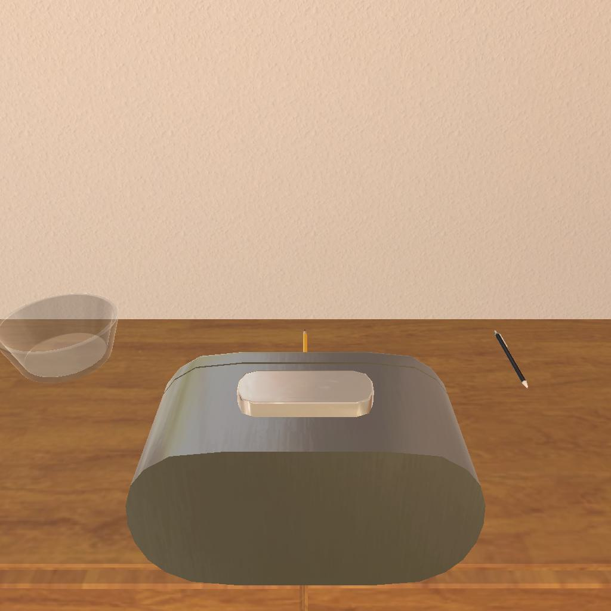

---------------------------------------------------------task: 0---------------------------------------------------------
--------------------------------------------------------------------------------------------------------------------------------------------------------------------
--------------------------------------------------------------------------------------------------------------------------------------------------------------------
Step:--------------------------------------------------------------------------12-------------------------------------------------------------------------------
----------------------------------------
VLM Prompt:
Image1:
Image2:
**Instruction**
1. Analyze the provided images to identify all visible household objects and compare the difference between images (e.h. whether the object is opened or not and taken on hand or not), focusing on those relevant to the task description "look at alarmclock under the desklamp."
2. Use the analysis of images and the task hint "The agent must find an object of the desired type, locate and turn on a light source with the desired object in-hand." to answer the question: what is the most reasonable action in the choices for the task description "look at alarmclock under the desklamp"?
3. Decide and write the answer using the template: The answer is: (i): , where i is the real number. If there is no desired object in images, search every place based on **Initial Observation** to find the object. And if no one is exactly correct, choose a similar answer.
**Initial Observation**
You are in the middle of a room. Looking quickly around you, you can see bed (1), sidetable (1), drawer (1-11), dresser (1), safe (1), laundryhamper (1), garbagecan (1)
**Answer Choices**
(1): go to bed 1
(2): go to sidetable 1
(3): go to drawer 1
(4): go to drawer 2
(5): go to drawer 3
(6): go to drawer 4
(7): go to drawer 5
(8): go to drawer 6
(9): go to drawer 7
(10): go to drawer 8
(11): go to drawer 9
(12): go to drawer 10
(13): go to drawer 11
(14): go to safe 1
(15): go to laundryhamper 1
(16): go to garbagecan 1
(17): put alarmclock 1 in/on dresser 1
(18): examine dresser 1
**Answer**
Let's think step by step by following the instructions.
----------------------------------------
----------------------------------------
Original Response:
First, we analyze the images provided. In both images, we can see a desklamp and an alarmclock on a surface that seems to be a desk or a dresser. There is no visible difference between the images in terms of the objects being opened or taken in hand.
Now, considering the task description "look at alarmclock under the desklamp," we need to find the alarmclock and ensure that the desklamp is turned on to see the alarmclock properly. The images already show the alarmclock under the desklamp, but it's unclear if the desklamp is turned on as there is no visible light.
Given the task hint, the agent must find the alarmclock and turn on a light source with the alarmclock in hand. Since the alarmclock is already under the desklamp, the most reasonable action would be to turn on the desklamp to look at the alarmclock. However, the provided answer choices do not include an option to turn on the desklamp.
Based on the Initial Observation, the closest action related to the task would be to go to the dresser, where the alarmclock is likely placed. Therefore, the best choice from the provided options would be:
The answer is: (18): examine dresser 1.
----------------------------------------
----------------------------------------
>>> Refine Original VLM Response and Get Pure Action: examine dresser 1
----------------------------------------
-----------------------------------------------------------------
Running time: 50.05090689659119 seconds
Total Money: 0.35536
-----------------------------------------------------------------
-----------------------------------------------------------------
Text Observation:On the dresser 1, you see a bowl 1, a pen 1, and a pencil 2.
-----------------------------------------------------------------
UNSUCCEED